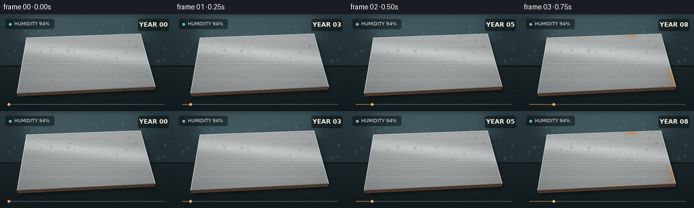
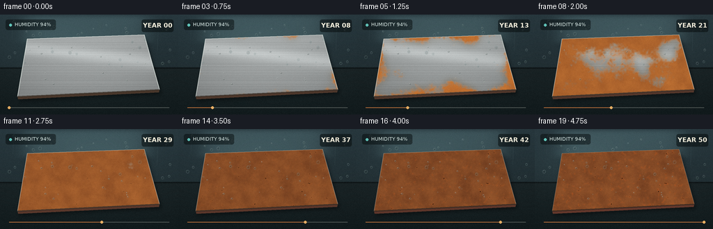

CODING AGENTS AS PIXEL WORLD MODELS
traex/GPT-5.6-Sol · phygen_157
点击播放 · 原生 RGB 像素
逐轮保存的候选
回放视频、检查图与代码变化。
每份候选均可单独播放。实际图片检查记录在下方工具轨迹中。
候选 01播放与检查图
点击播放 · 原生 RGB 像素


展开代码变化
--- 上一保存版本
+++ 本次保存版本
@@ -0,0 +1,247 @@
+from pathlib import Path
+import math
+
+import cv2
+import numpy as np
+from PIL import Image, ImageDraw, ImageFont, ImageFilter
+from scipy.ndimage import gaussian_filter
+
+import artifact_io
+
+
+CASE_DIR = Path(__file__).resolve().parent
+W, H, N = 256, 144, 20
+S = 3
+WW, HH = W * S, H * S
+
+
+def smoothstep(a, b, x):
+ x = np.clip((x - a) / (b - a), 0.0, 1.0)
+ return x * x * (3.0 - 2.0 * x)
+
+
+def noise_field(seed, sigma, shape=(HH, WW)):
+ rng = np.random.default_rng(seed)
+ z = rng.normal(size=shape).astype(np.float32)
+ z = gaussian_filter(z, sigma=sigma, mode="reflect")
+ z -= z.min()
+ z /= max(z.max(), 1e-6)
+ return z
+
+
+def font(size, bold=False):
+ candidates = [
+ "/usr/share/fonts/truetype/dejavu/DejaVuSans-Bold.ttf" if bold else
+ "/usr/share/fonts/truetype/dejavu/DejaVuSans.ttf",
+ "/usr/share/fonts/truetype/liberation2/LiberationSans-Bold.ttf" if bold else
+ "/usr/share/fonts/truetype/liberation2/LiberationSans-Regular.ttf",
+ ]
+ for p in candidates:
+ if Path(p).exists():
+ return ImageFont.truetype(p, size)
+ return ImageFont.load_default()
+
+
+# Static geometry and texture maps. They remain registered to the steel coupon,
+# so the corrosion visibly grows rather than changing randomly between frames.
+yy, xx = np.mgrid[0:HH, 0:WW]
+poly = np.array([(39, 35), (207, 29), (229, 108), (25, 118)], np.float32) * S
+plate_mask_u8 = np.zeros((HH, WW), np.uint8)
+cv2.fillConvexPoly(plate_mask_u8, poly.astype(np.int32), 255, lineType=cv2.LINE_AA)
+plate_mask = plate_mask_u8.astype(np.float32) / 255.0
+inside = (plate_mask_u8 > 127).astype(np.uint8)
+edge_dist = cv2.distanceTransform(inside, cv2.DIST_L2, 5) / S
+
+coarse = noise_field(157, 34)
+medium = noise_field(211, 13)
+fine = noise_field(503, 3.2)
+micro = noise_field(619, 1.0)
+
+# Corrosion starts at edges and in broad moisture islands, then joins up.
+edge_seed = np.exp(-edge_dist / 11.5)
+vulnerability = .53 * coarse + .28 * medium + .19 * fine
+vulnerability = np.clip(vulnerability + .30 * edge_seed, 0, 1)
+threshold = .96 - .82 * vulnerability
+
+# A separate map controls dark pits and flaky scale late in the sequence.
+pit_seed = fine * .58 + micro * .42
+pit_points = (pit_seed > .68).astype(np.float32)
+pit_points = gaussian_filter(pit_points, .75)
+pit_points /= max(pit_points.max(), 1e-6)
+
+# Brushed-steel grain: long, fine lines following the coupon's horizontal axis.
+rng = np.random.default_rng(901)
+line_profile = gaussian_filter(rng.normal(0, 1, HH), 0.65)
+line_profile /= max(np.max(np.abs(line_profile)), 1e-6)
+brush = np.repeat(line_profile[:, None], WW, axis=1)
+brush += .20 * gaussian_filter(rng.normal(size=(HH, WW)), (0.65, 15))
+
+# Stable droplets on the fogged enclosure and on the steel.
+rng = np.random.default_rng(44)
+glass_drops = []
+for _ in range(32):
+ x = int(rng.uniform(9, W - 8) * S)
+ y = int(rng.uniform(7, 75) * S)
+ r = int(rng.uniform(1.0, 2.6) * S)
+ glass_drops.append((x, y, r))
+plate_drops = []
+for _ in range(24):
+ x = int(rng.uniform(39, 210) * S)
+ y = int(rng.uniform(40, 103) * S)
+ if inside[min(y, HH - 1), min(x, WW - 1)]:
+ plate_drops.append((x, y, int(rng.uniform(.8, 2.0) * S), rng.uniform(0, 1)))
+
+
+def base_scene(frame_i):
+ t = frame_i / (N - 1)
+ arr = np.zeros((HH, WW, 3), np.float32)
+
+ # Cold, humid workshop wall and a dark wet bench.
+ gy = yy / HH
+ wall = np.stack([
+ 27 + 13 * (1 - gy),
+ 37 + 19 * (1 - gy),
+ 40 + 22 * (1 - gy)], axis=-1)
+ arr[:] = wall
+ table = yy > 77 * S
+ table_grad = np.clip((yy - 77 * S) / (67 * S), 0, 1)
+ bench = np.stack([25 - 8 * table_grad, 34 - 8 * table_grad, 36 - 8 * table_grad], -1)
+ arr[table] = bench[table]
+
+ # Diffuse frosted window, blurred by condensation.
+ win = np.exp(-(((xx - 124 * S) / (91 * S)) ** 8 + ((yy - 21 * S) / (20 * S)) ** 8))
+ arr += win[..., None] * np.array([22, 29, 29], np.float32)
+ # Slow moving fog bloom gives the shot a genuine time-lapse feel.
+ fogx = 84 + 60 * math.sin(t * math.pi * 1.1)
+ fog = np.exp(-((xx / S - fogx) ** 2 / 4800 + (yy / S - 48) ** 2 / 1200))
+ arr += fog[..., None] * np.array([8, 11, 11])
+
+ # Back-wall seam and wet bench reflection.
+ arr[76*S:78*S] *= .52
+ refl = np.exp(-((xx / S - 128) / 93) ** 2) * np.exp(-((yy / S - 98) / 28) ** 2)
+ arr += refl[..., None] * np.array([4, 6, 6])
+ return arr
+
+
+def draw_environment(img, frame_i):
+ t = frame_i / (N - 1)
+ d = ImageDraw.Draw(img, "RGBA")
+ # Vertical condensation trails on the glass.
+ for k, (x0, length, alpha) in enumerate([(18, 26, 24), (226, 34, 30), (64, 18, 18), (191, 23, 20)]):
+ x = (x0 + 1.5 * math.sin(t * 3 + k)) * S
+ y0 = (10 + k * 8) * S
+ d.line((x, y0, x - S, y0 + length*S), fill=(170, 205, 202, alpha), width=max(1, S//2))
+ # Condensation droplets, mostly out of focus, each with a dim rim/highlight.
+ for j, (x, y, r) in enumerate(glass_drops):
+ a = int(20 + 15 * (0.5 + 0.5 * math.sin(j * 2.1 + t * 3)))
+ d.ellipse((x-r, y-r, x+r, y+r*1.20), fill=(20, 29, 31, a), outline=(170, 199, 196, a+16), width=1*S)
+ d.ellipse((x-r*.40, y-r*.55, x-r*.08, y-r*.22), fill=(230, 245, 239, a+34))
+
+
+def compose_frame(i):
+ t = i / (N - 1)
+ # The corrosion's effective time accelerates early, as in a decades-long time lapse.
+ age = t ** .90
+ arr = base_scene(i)
+
+ # Plate shadow, cast onto the wet table.
+ shadow_mask = np.zeros((HH, WW), np.uint8)
+ shadow_poly = poly + np.array([2.5*S, 6*S])
+ cv2.fillConvexPoly(shadow_mask, shadow_poly.astype(np.int32), 255, lineType=cv2.LINE_AA)
+ shadow = gaussian_filter(shadow_mask.astype(np.float32) / 255, 3.2*S)
+ arr *= (1 - .48 * shadow[..., None])
+
+ # Smooth silver-gray steel with cool metallic gradient and reflected strip light.
+ px = xx / S
+ py = yy / S
+ metal_luma = 138 + 28 * (1 - (py - 29) / 92) + 8 * brush
+ strip = np.exp(-((py - (49 + .105 * (px - 40))) / 10.0) ** 2)
+ metal_luma += 31 * strip
+ vign = ((px - 129) / 116) ** 2 + ((py - 75) / 72) ** 2
+ metal_luma -= 15 * vign
+ metal = np.stack([metal_luma * 1.02, metal_luma * 1.045, metal_luma * 1.045], -1)
+
+ # Rust appears smoothly wherever the age crosses a fixed susceptibility threshold.
+ rust = smoothstep(-.055, .075, age * 1.12 - threshold)
+ rust *= plate_mask
+ mature = smoothstep(.22, .88, age) * rust
+ rust_texture = .58 * medium + .27 * fine + .15 * micro
+ early_col = np.stack([166 + 52*rust_texture, 91 + 42*rust_texture, 40 + 18*rust_texture], -1)
+ old_col = np.stack([82 + 74*rust_texture, 42 + 49*rust_texture, 24 + 25*rust_texture], -1)
+ rust_col = early_col * (1 - mature[..., None] * .82) + old_col * (mature[..., None] * .82)
+
+ # Oxidation stains halo the main rust fronts.
+ halo = gaussian_filter(rust, 5*S) - .73 * rust
+ halo = np.clip(halo, 0, .30) * smoothstep(.02, .22, age)
+ tarnish = np.array([113, 96, 70], np.float32)
+ steel = metal * (1 - halo[..., None]) + tarnish * halo[..., None]
+ steel = steel * (1 - rust[..., None]) + rust_col * rust[..., None]
+
+ # Late pits and black oxide pinholes, concentrated inside mature corrosion.
+ pits = smoothstep(.48, .84, age) * smoothstep(.42, .80, pit_points) * rust
+ steel *= (1 - .57 * pits[..., None])
+ # Flaky bright-orange scale catches grazing light during the oldest decades.
+ flakes = smoothstep(.63, .98, age) * smoothstep(.57, .82, fine) * rust * (1 - pits)
+ flake_col = np.array([188, 83, 27], np.float32)
+ steel = steel * (1 - .35 * flakes[..., None]) + flake_col * (.35 * flakes[..., None])
+
+ a = plate_mask[..., None]
+ arr = arr * (1 - a) + steel * a
+ arr = np.clip(arr, 0, 255).astype(np.uint8)
+ img = Image.fromarray(arr, "RGB")
+
+ # Crisp plate thickness and edge bevel.
+ d = ImageDraw.Draw(img, "RGBA")
+ p = [tuple(map(float, q)) for q in poly]
+ bottom = [(p[3][0], p[3][1]), (p[2][0], p[2][1]), (p[2][0]-1*S, p[2][1]+4*S), (p[3][0]+1*S, p[3][1]+4*S)]
+ edge_rust = int(45 + 75 * age)
+ d.polygon(bottom, fill=(58 + edge_rust//3, 55, 43, 255))
+ d.line(p + [p[0]], fill=(222, 230, 224, int(165*(1-age)) + 35), width=S)
+ d.line((p[3][0], p[3][1], p[2][0], p[2][1]), fill=(43, 33, 26, 175), width=2*S)
+
+ draw_environment(img, i)
+ d = ImageDraw.Draw(img, "RGBA")
+
+ # Water beads sit on top of the surface. Some evaporate as the decades pass.
+ for j, (x, y, r, phase) in enumerate(plate_drops):
+ visibility = .30 + .70 * (0.5 + .5 * math.sin(t*8 + phase*9))
+ if visibility < .43:
+ continue
+ rr = r * (0.77 + .23 * visibility)
+ d.ellipse((x-rr, y-rr*.74, x+rr, y+rr*.78), fill=(18, 28, 29, 55), outline=(225, 238, 230, 90), width=max(1, S//2))
+ d.ellipse((x-rr*.45, y-rr*.45, x-rr*.10, y-rr*.12), fill=(255, 255, 247, 150))
+
+ # Documentary overlays make the decades scale unambiguous.
+ small = font(7*S, False)
+ bold = font(9*S, True)
+ d.rounded_rectangle((8*S, 7*S, 80*S, 22*S), radius=3*S, fill=(7, 13, 14, 132))
+ d.ellipse((13*S, 13*S, 17*S, 17*S), fill=(104, 212, 200, 230))
+ d.text((21*S, 10*S), "HUMIDITY 94%", font=small, fill=(218, 234, 230, 230), stroke_width=0)
+ years = round(t * 50)
+ label = f"YEAR {years:02d}"
+ box = d.textbbox((0, 0), label, font=bold)
+ tw = box[2] - box[0]
+ d.rounded_rectangle((W*S-10*S-tw, 7*S, W*S-7*S, 25*S), radius=3*S, fill=(7, 13, 14, 142))
+ d.text((W*S-8*S-tw, 10*S), label, font=bold, fill=(245, 239, 220, 245))
+ # Thin timeline at the bottom.
+ d.line((13*S, 134*S, 243*S, 134*S), fill=(221, 224, 211, 80), width=S)
+ d.line((13*S, 134*S, (13 + 230*t)*S, 134*S), fill=(206, 117, 56, 220), width=S)
+ d.ellipse(((11 + 230*t)*S, 132*S, (15 + 230*t)*S, 136*S), fill=(240, 181, 103, 240))
+
+ # Gentle optical bloom and film grain at final resolution.
+ img = img.resize((W, H), Image.Resampling.LANCZOS)
+ out = np.asarray(img).astype(np.float32)
+ rg = np.random.default_rng(3000 + i)
+ out += rg.normal(0, 1.25, out.shape[:2])[..., None]
+ # Very subtle exposure breathing, common in long-term fixed-camera footage.
+ out *= 1.0 + .012 * math.sin(i * .73)
+ return np.clip(out, 0, 255).astype(np.uint8)
+
+
+def main():
+ frames = np.stack([compose_frame(i) for i in range(N)], axis=0)
+ artifact_io.save(frames, CASE_DIR)
+
+
+if __name__ == "__main__":
+ main()
可观测工具轨迹
实际执行的命令与返回图片。
命令 1exit 0
/bin/bash -lc "cat prompt.txt && printf '\\n--- GENERATION_RULES ---\\n' && cat GENERATION_RULES.md"
命令 2exit 0
/bin/bash -lc "cat task_spec.json && printf '\\n--- FILES ---\\n' && find . -maxdepth 2 -type f -printf '%p\\n' | sort"
命令 3exit 0
/bin/bash -lc "sed -n '1,240p' artifact_io.py"
命令 4exit 0
/bin/bash -lc "python - <<'PY' import importlib.util for x in ['cv2','scipy','imageio']: print(x, bool(importlib.util.find_spec(x))) PY"
命令 5exit 0
/bin/bash -lc 'python generate.py'
命令 6exit 0
/bin/bash -lc "python - <<'PY'
from pathlib import Path
import json, numpy as np
from PIL import Image
p=Path('.')
s=json.loads((p/'task_spec.json').read_text())
z=np.load(p/'pixels.npz')['pixels']
files=sorted((p/'frames').glob('*.png'))
print('pixels',z.shape,z.dtype,'frames',len(files))
for q in [files[0],files[-1]]:
im=np.asarray(Image.open(q)); print(q.name, im.shape,im.dtype,im.min(),im.max(),round(float(im.mean()),2))
print('artifacts', {x:(p/x).stat().st_size for x in ['pixels.npz','index.html','inspection.png','transition_check.png','generate.py']})
assert z.shape==(s['height'],s['width'],s['frames'])
assert len(files)==s['frames']
assert all(np.asarray(Image.open(x)).shape==(s['height'],s['width'],3) for x in files)
PY"视觉工具实际返回图片 1

视觉工具实际返回图片 2

保存候选 1 份；完成命令 6 次；可验证图片返回 2 张。原始 API 响应与完整日志保留在本地。